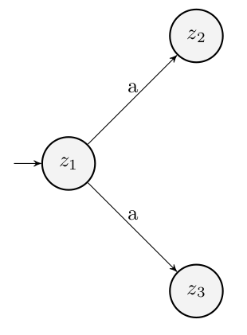
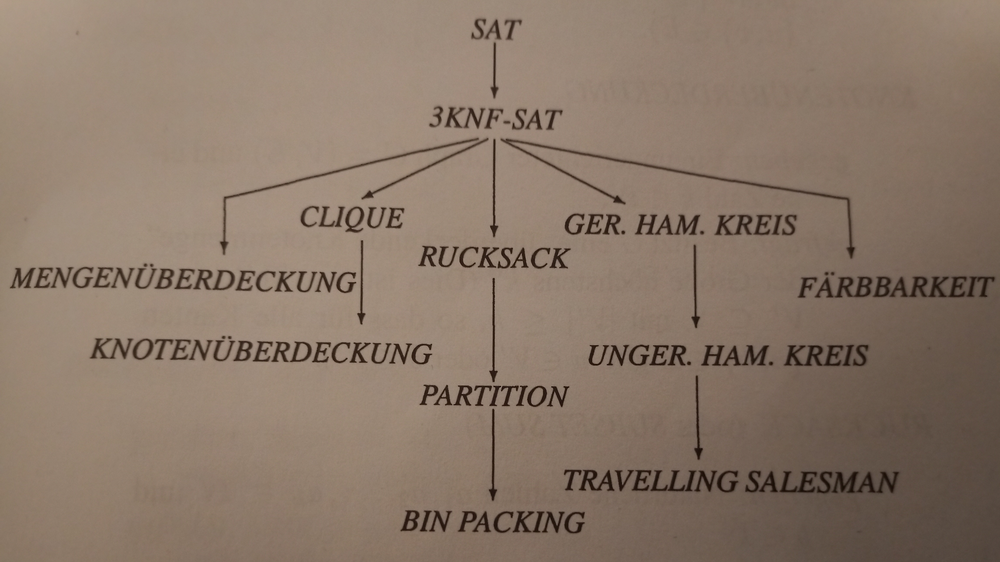

Kapitel 5: P und NP

Die Komplexitätsklasse P
TM mit $t_{TM} \in O(n^k)$ mit $k \in \mathbb{N}$
Noch in P:
Probleme, die von Mehrbandturingmaschinen in polynomieller Zeit erkannt werden.
Eine k-Band TM $tm_k$ kann von einer 1-Band TM in $5k \cdot t_{tm_k}(n)^2$ simuliert werden.
Noch in P:
Probleme, die von einer Einband-TM mit $|\Sigma| > 2$ erkannt werden.
Eine TM $tm^{'}$ über $\Sigma^{'}$ kann von einer kanonischen TM in $4 \cdot log(|\Sigma|) \cdot t_{tm^{'}}(n)$ simuliert werden.
Nicht mehr in P?
Probleme mit einem $2^n$-großen Lösungsraum
Brute-Force Algorithmus:
Probiere alle Kombinationen durch
Nicht-Determinismus
NFA = $[\Sigma, Z,\delta,S,E]$
$S \subseteq Z$; $\delta: \Sigma \times Z \rightarrow \mathcal{P}(Z)$
Nicht-Determinismus
NTM = $[Z, \Sigma,\Gamma, \delta, z_0, \square, E]$
$\delta: \Gamma \times Z \rightarrow \mathcal{P}(Z \times \Gamma \times \{R,L,-\})$
NFA und DFA
Potenzmengen-Konstruktion
NTM und Lauflänge
Glückliches Raten
NP
NTM mit $t_{NTM} \in O(n^k)$ mit $k \in \mathbb{N}$
P = NP?
Es gilt: $P \subseteq NP$
Möglichkeit 1:
$P \subsetneq NP$
Möglichkeit 2:
$P = NP$
Komplexitätstheoretische Reduktion
$A$ polynomial reduzierbar auf $B$: $A \leq_{p} B$
$\exists TM$ mit $t_{TM}(n) \in O(n^k)$, $k \in \mathbb{N}$
TM erkennt Sprache $\{wx|w \in A \wedge x \in B\}$
TM stellt sicher: $w \in A \leftrightarrow f_{TM}(w) \in B$
NP-Schwere
$A$ ist NP-schwer genau dann, wenn:
Für alle $L \in NP$: $L \leq_{p} A$
NP-Vollständigkeit
$A$ ist NP-vollständig genau dann, wenn:
$A$ ist NP-schwer und $A \in NP$
SAT
Gegeben: Eine Formel F der Aussagenlogik
Gesucht: Ist F erfüllbar?
SAT ist NP-vollständig
Reduktionsbaum
Als Logistiker:in möchte ich, dass morgens die optimalen Routen für die LKWs in die 24 Filialen berechnet werden, um die Lieferzeit zu minimieren.